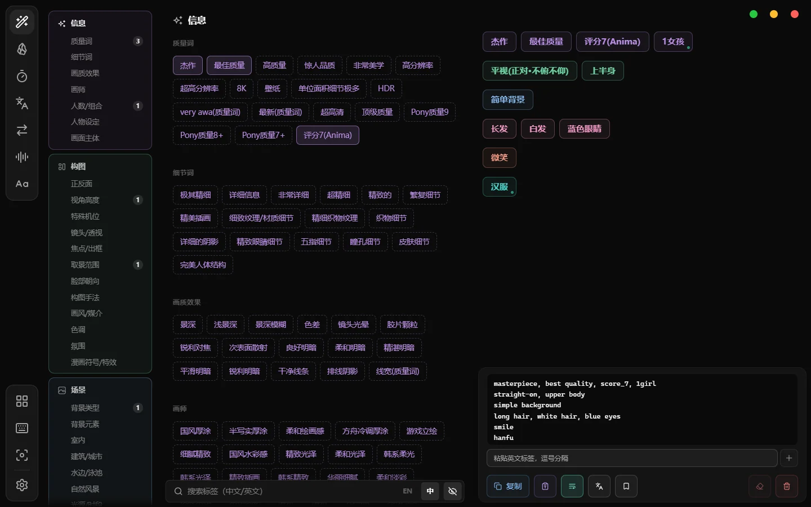

桌面小工具 · Windows
一个口袋，
装下每天要用的小工具
提示词词库、字体库、音频试听、笔记、截图 OCR、翻译、番茄钟……不用一个功能装一个软件，点一下托盘里的口袋就都在。
打开就是一整块，不是一摞卡片
页面直接铺在 Windows 的云母 / 亚克力材质上，列表滚到边上慢慢淡出。下面是真实界面，不是效果图。

三件别处没有的小事
01
字体会跟着你走
在 XGTools 里点一款字，Photoshop、达芬奇、PhotoCraft 里选中的文字就换成它。置顶小窗立在屏幕边上，试字不用来回翻几百款字体。
02
为二次元模型准备的词库
约 2250 个 Danbooru 标签，按层上色、按语义去重、搜索认同义词；中文描述一键整理成 Anima 这类模型吃的英文句子。
03
装一次，往后自己更新
新版本发布后，软件启动时会提示，点一下就下载、校验签名、装好重启。被改过的安装包会被拒绝。
口袋里都有什么
每一页都能在设置里关掉、拖动排序，只留你用得上的。